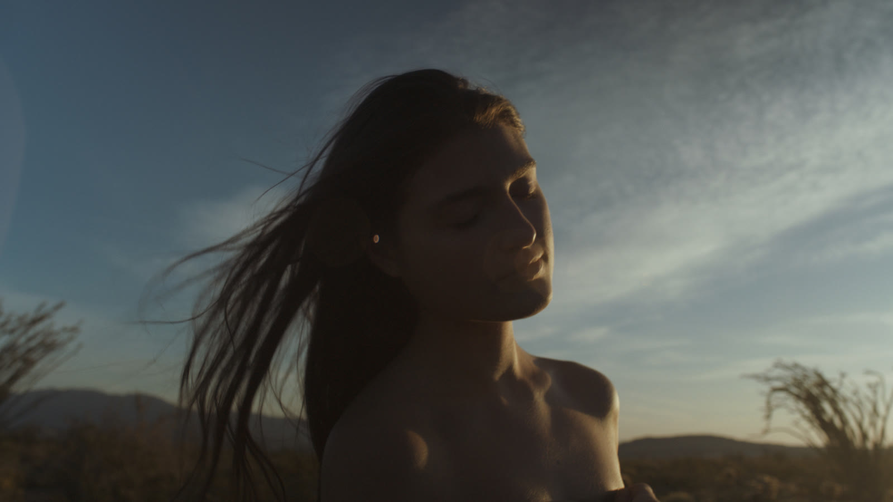
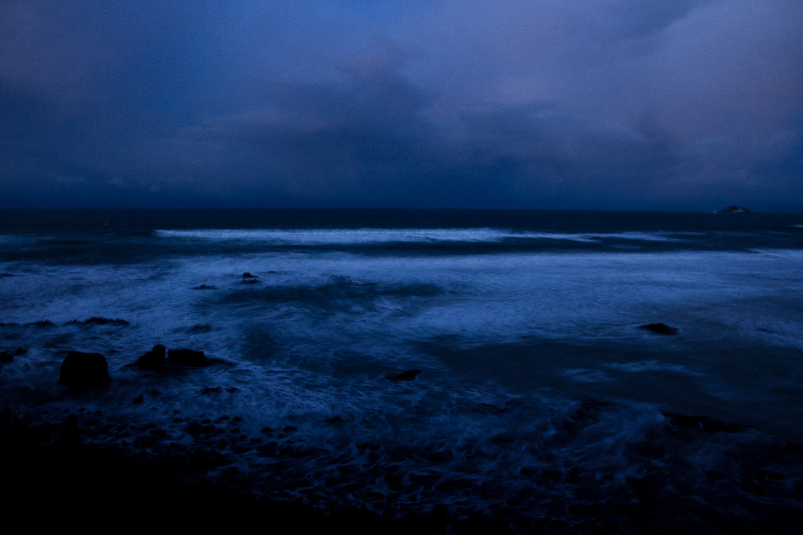

The same fifty-two feelings, placed along three axes rather than sorted into groups: how activated a state is, whether it turns inward or outward, and how open it is to what surrounds it. A feeling was never only one thing.
Waves roll gently onto a wide, flat beach under a pale blue sky, with small white clouds along the horizon. Sunlight lies in a soft column on the water as the surf comes in and draws back. Footage by Joey Bania.
Constellation
X — Activation
Still → Activated
Y — Orientation
Inward → Outward
Z — Permeability
Contracted → Permeable
Drag to rotate, scroll to zoom, and select any point to read where it sits.

A person stands in a desert at golden hour, eyes closed, face lifted slightly toward the light. Their long dark hair lifts in the wind across a deep blue sky streaked with thin cloud. Warm light catches their cheek, chin and collarbone; low hills and spindly shrubs sit dark along the horizon.
Seen from behind and below, a person's head and bare shoulder are dark against a clear evening sky of deep blue. Strands of their hair blow sideways in the wind. Up and to the right, a small pale moon hangs in the blue.

Dusk over a rocky shoreline. Waves roll in white across dark water toward black rocks in the foreground, the whole scene washed in deep blue and violet. Low cloud fills the sky, and a small island sits dark on the horizon at the right.